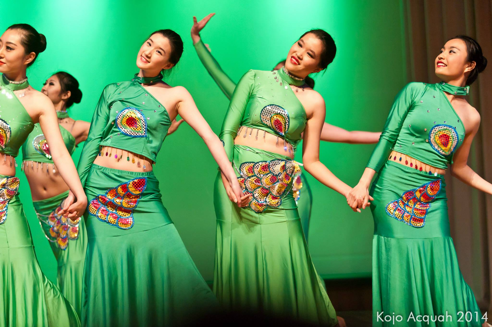
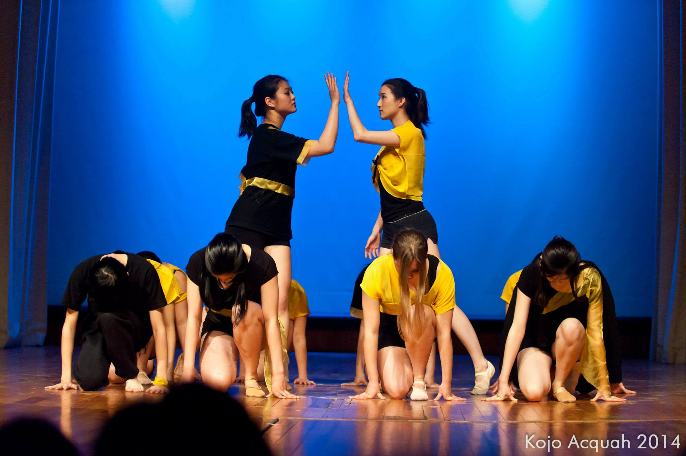

Checkmate
The MIT Asian Dance Team's Spring 2014 showcase, Checkmate, took place on May 4th in MIT's Kresge Auditorium! We performed amazing dances in styles including Dai, Xinjiang, Han, contemporary, and classical Chinese, as well as hip-hop and pop performances to songs by CL, G-Dragon, Super Junior, and more!
Click to see the photos and watch the videos!
 |
 | |
| 01 - Supergirl | 02 - Orchid | 03 - Trickling Stream |
|  |  |
|
| 05 - Who You | 07 - Mulan | 08 - Senior Interlude |
 |
||
| 09 - The Baddest Female | 10 - Resonant Drums | 11 - Loving U |
 |
 |
|
| 13 - Why Are the Flowers So Red | 14 - It's You | 16 - Chess |
Photography Credits: Supergirl - Joseph Lee, Rest - Kojo Acquah
Previous Showcases
Click on the images below to learn more about our other showcases! Feel free to also browse our photo gallery and performance videos!
 |
 |
 |
| Illusions | Inspirasian | Limitless |
| Fall 2013 | Spring 2013 | Fall 2012 |
 |
 |
 |
| Inspirasian | Unforgettable | Inspirasian |
| Spring 2012 | Fall 2011 | Spring 2011 |
 |
 |
|
| Resonant Blue | Phoenix Rising | |
| Fall 2010 | Spring 2010 |